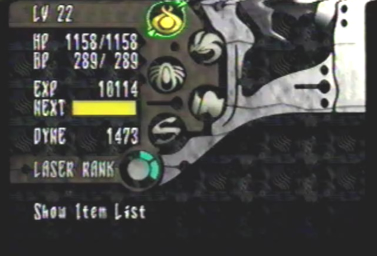
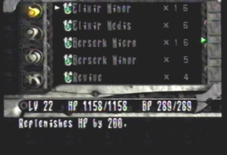
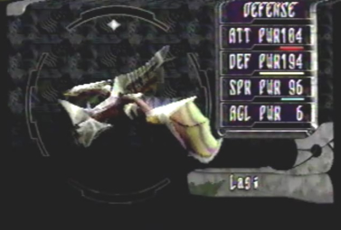

The Player Menu To organize all of your items and information, you will receive, the game gives you a player menu. You can access this menu by pressing start. Within this menu, to the left hand side, you can view your current level, HP (hit points), BP (berserk points), EXP (Experience points), a bar showing how much more points you need to the next level gain, your current amount of money earned and your laser rank. To the right, is a list of options that allow you to use items you've received, view documents, view your berserk attack list, equip gun parts, morph your dragon into a different form, view defeated enemy data, view a map of your current location and change the game settings. |
This is the player menu. You have a number of options to choose from. |
 The first option, is the item list. |
 This brings you into another menu where you can use items you've recieved, view documents, view your berserk attack list and equip gun parts. |
The second option, allows you to select a dragon type. |
 This brings you into a menu where you can change your dragon's form. You move a cursor around in a circular motion. Doing so, will shape your dragon into different forms, it's quite a wonder to watch. |
The third option, allows you to display data on defeated enemies. |
Within this menu, you can view information about a certain enemy, as well as its attack data. You can even view the exact length, height, width, and weight of each enemy. |
The fourth option, allows you to display a map of your current location. |
A detailed map of the area your in will appear. You also have the option to exit your current location and go to the World Map.
|
The Fifth option, allows you to change the game settings. |
You can change Edge's control layout or change the sound to stereo or mono. |